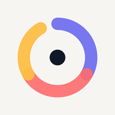

녹음은 이용자의 기기 안에만 저장되며, 운영자나 제3자에게 전송되지 않습니다. 계정·로그인·광고·추적이 없습니다.
운영자가 수집하거나 받아 보는 개인정보는 없습니다. 이름, 이메일, 전화번호, 위치, 연락처를 요구하지 않으며 회원가입·로그인 절차가 없습니다.
현재 버전은 녹음·설정 등 이용자 데이터를 네트워크로 전송하지 않습니다. 분석 도구, 광고 네트워크, 추적기를 사용하지 않습니다.
녹음을 글·아이디어·할 일 등으로 바꿔 주는 '펼치기' 기능이 추가되면, 이용자가 그 기능을 실행할 때 음성과 텍스트가 변환 서버와 AI 서비스(OpenAI)로 전송될 수 있습니다. 그 전에 이 방침을 개정하고 앱에서 먼저 안내하겠습니다.
이 앱은 만 14세 미만 아동을 대상으로 하지 않으며, 아동을 포함해 어떤 이용자로부터도 개인정보를 수집하지 않습니다.
수집하는 정보가 없으므로 제3자에게 제공하거나 판매하는 정보도 없습니다.
방침이 바뀌면 이 페이지에 변경 내용과 시행일을 게시하고, 데이터 처리 방식이 달라지는 경우 앱에서도 먼저 안내합니다.
개인정보 관련 문의: csyull2287@gmail.com
Your recordings stay on your device and are never sent to us or to any third party. No accounts, logins, ads, or tracking.
Nothing. We do not collect or receive any personal information. No names, emails, phone numbers, location, or contacts. No sign-up or login.
This version sends no user data over the network. No analytics, ad networks, or trackers are used.
If a future version adds the "Expand" feature (turning a recording into writing, ideas, or tasks), audio and text may be sent to a processing server and an AI provider (OpenAI) when you use it. We will update this policy and tell you in the app before that happens.
Microphone: sprint recording only. Background audio / foreground service (Android): keeps a recording going when the screen turns off or you switch apps, shown with a notification. Notifications (Android): only to show that recording is in progress. Vibration: a gentle nudge after a long pause. No location, contacts, photos, or camera access.
The app is not directed to children under 14 and collects no personal information from anyone, including children.